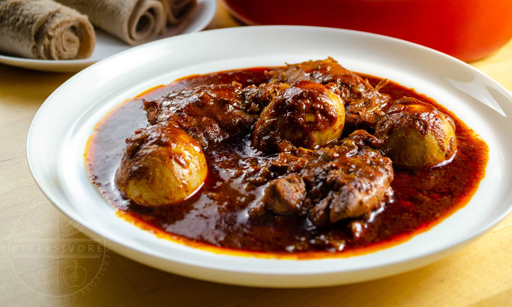

This is the recipe for making doro wot

Doro Wot is a spicy Ethiopian chicken stew that is traditionally served with injera. It is known for its rich flavor and vibrant color.
Here is a simple recipe to make doro wot:
- Ingredients:
- 2 lbs chicken, cut into pieces
- 2 large onions, finely chopped
- 1/4 cup vegetable oil
- 2 tablespoons berbere spice mix
- 4 cloves garlic, minced
- 1 inch ginger, grated
- Salt to taste
- 1/4 cup water
- Instructions:
- In a large pot, heat the vegetable oil over medium heat.
- Add the chopped onions and sauté until golden brown.
- Add the garlic and ginger, and cook for another minute.
- Add the berbere spice mix and cook for 2-3 minutes until fragrant.
- Add the chicken pieces and stir to coat them with the spice mixture.
- Add salt and water, cover the pot, and simmer for 30-40 minutes until the chicken is cooked through.
- Serve hot with injera.
Back to home